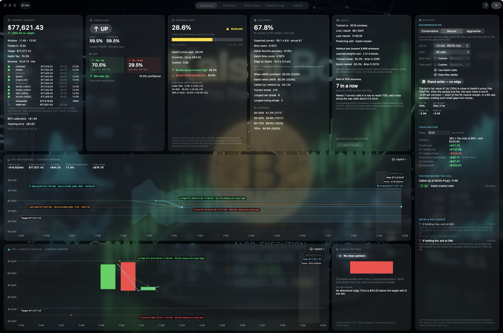
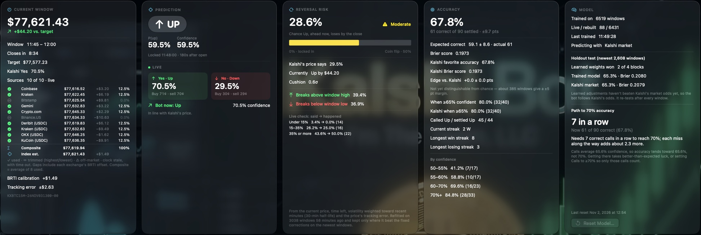
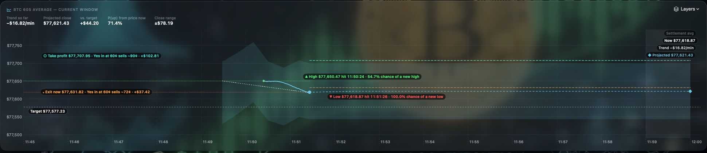
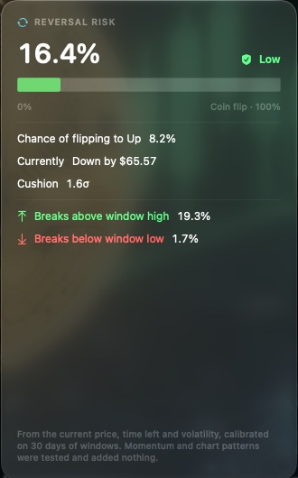
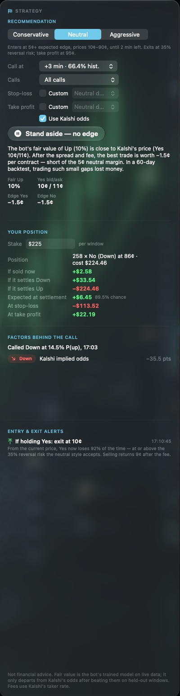
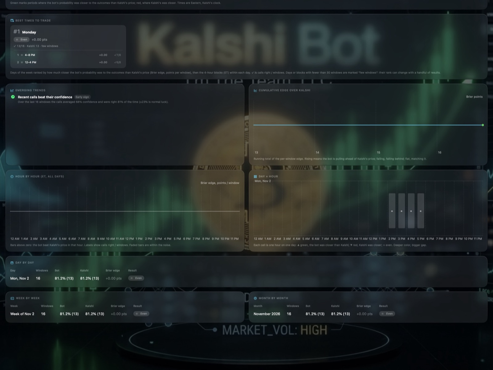
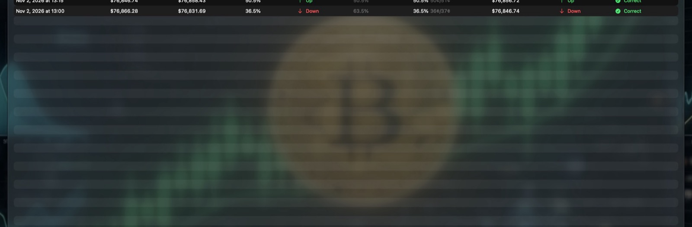
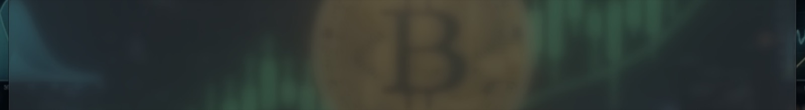

Calls, live odds and an honest scorecard for Kalshi's 15-minute Bitcoin markets.

Kalshi Bot follows every Kalshi KXBTC15M window. It makes a call at the minute you choose, shows you the live market and the evidence behind the call, suggests entries and exits for your trading style, and scores every result against Kalshi's own price. This manual explains every card, chart and setting.
© 2026 I'm The Team, LLC · MIT License · github.com/jaldrich2023/KalshiBot
Kalshi Bot isn't financial advice. It gives statistical estimates for information and education only. Every call is a probability, not a certainty: a 70% call is expected to miss about 3 times in 10, and past accuracy doesn't guarantee future results, and event contracts carry a real risk of loss. You're responsible for your own trading decisions.
You need:
You don't need a Kalshi account or any API keys. Kalshi Bot reads only public market data, and it never places orders. Any trade you make, you make yourself on Kalshi.
While it's running, Kalshi Bot keeps your Mac from sleeping, so it doesn't miss a window (turn off Keep Mac awake in the Strategy card to allow sleep). Click Stop in the toolbar to pause it; click Start to resume.
| Item | What it does |
|---|---|
| Status pill | Live while the bot is running. |
| Tabs | Dashboard, Indicators, Performance, Prediction Log and Activity. |
| Copy CSV | Copies the whole prediction log to the clipboard as CSV, for a spreadsheet. |
| Start / Stop | Starts or pauses the bot. |
| Item | What it does |
|---|---|
| Kalshi Bot › Check for Updates… | Asks for the newest release and, if it's newer, shows a notice with a download button. It never downloads or installs by itself. The app also checks at launch, at most every 6 hours. |
| Kalshi Bot › Settings… (⌘,) | Privacy: Send crash and bug reports (off by default) and Send anonymous install notice. |
| Help › Report a Problem… | Sends a bug report or feedback you write, with an optional contact e-mail and recent logs. Preview… shows exactly what will be sent. |
Every field explains itself. Rest the pointer on any figure, label, setting or button for a moment and a popover opens with its name and a fuller explanation: what it measures, how it's calculated and how to read it. Moving away, clicking, typing or scrolling closes it. In the Prediction Log and the Performance tab's charts and tables, hovering opens the detailed breakdown for that window or period instead.
Each KXBTC15M market covers one 15-minute window, for example 5:00–5:15 PM Eastern. It asks a single question: will Bitcoin settle at or above the target?
Kalshi charges a taker fee on each order, rounded up to the next cent: 7% × contracts × price × (1 − price). Kalshi Bot includes this fee, and half the bid/ask spread, in every edge and profit figure it shows: per contract for the edges, and once per order for your position's cost and profit.
Because both the target and the settlement are 60-second averages, the last minute matters a lot. Once the settlement minute starts, every second that passes locks in part of the answer. Kalshi Bot's odds take that into account.

KXBTC15M-26NOV021815-15.Before the call time, the card says "No prediction locked for this window" and shows the live view only. At the call time it locks:
The scorecard for every settled call:
If Calls is set to confident calls only (see chapter 4), the card says how many low-confidence windows were skipped.

This chart follows the same 60-second average that Kalshi settles on, across the whole window.
Use Layers at the top right to show or hide each element: the 60s average, Now, Target, Settlement minute, High/Low, Close range, Trend, Projection, and Stop & take profit. Labels are arranged so they don't overlap one another, the lines, or the Now dot.
The same window as 1-minute candles, with its own Layers menu. The Candle pattern card beside it names any recognized pattern in the latest candles, such as a hammer, an engulfing pattern, a doji or three white soldiers, and says whether it gives this window an edge. Patterns are informational only; they aren't model inputs.

These odds come from a random-walk model of the 60-second average. The uncertainty includes the price's tracking error, so a few-dollar cushion isn't treated as certain. After each history rebuild (at most hourly), the bot refits the corrections from the saved history. It fits on the older 80% of windows, scores on the newest 20%, and keeps a refit only where it does better. It tries three volatility weightings (the last hour equally, or a 30- or 15-minute half-life) and a blend with Kalshi's price.
In the Nov 3 backtest of 3,038 windows, the card was well calibrated: when it said about 10%, 20%, 30% and 43%, the leading side lost 8%, 22%, 32% and 44% of the time. That matched Kalshi's price (Brier 0.1611 vs. 0.1615), and blending the two didn't help, so the card shows Kalshi's figure alongside rather than mixed in. The refit improved the breakout odds, and volatility weighted toward the last 30 minutes scored best. Momentum, pullbacks, wicks, RSI and target crossings were all tested as early warnings; none added anything.

The Strategy card on the right of the dashboard turns the call and Kalshi's prices into a suggestion. It never trades for you.
Choose Conservative, Neutral or Aggressive at the top of the card:
| Setting | Conservative | Neutral | Aggressive |
|---|---|---|---|
| Minimum edge to enter (per contract, after fees) | 8¢ | 5¢ | 3¢ |
| Contract prices it will suggest | 25¢–75¢ | 10¢–90¢ | 1¢–99¢ |
| No new entries with less than | 5 min left | 2 min left | 1 min left |
| Exit when the side's chance of losing reaches | 25% | 35% | 50% |
| Default stop-loss (share of the price paid) | 30% | 50% | 70% |
| Take-profit (share of the most it could sell for) | 60% | 80% | 95% |
| Trailing stop keeps at least this share of the best gain | 60% | 50% | 30% |
The headline is one of:
Underneath, the card shows the bot's fair value, Kalshi's Yes bid and ask, and the edge on each side.
| Setting | Choices | What it does |
|---|---|---|
| Preset | Standard (+3 min, ≥60%) or High hit rate (wait for 80%) | Sets Call at, Calls and Wait together. High hit rate waits from +3 until a call is 80% confident: in a backtest on 1,941 recent windows it was right 84% of the time and called 87% of windows (Standard's calls: 73%). It raises accuracy, not profit: those contracts cost correspondingly more. |
| Call at | +3 to +12 min | When each window's call locks. The menu shows how often calls at that minute were right in history. Later calls are right more often, but Kalshi's price has moved too. Changing it rebuilds the model's history at the new time. |
| Calls | All calls, or only ≥60% (the default), 65%, 70%, 75% or 80% confident | Calls below the threshold are marked No call and left out of accuracy and performance. Every window is still logged and trained on. |
| Wait | Off (the default), or until 75%, 80%, 85% or 90% confident | With Wait on, the call doesn't lock at Call at: it waits, up to +12, until the bot is at least that confident — once the reversal risk of the side ahead is at most 100% minus that — and locks then. If it never gets there, the window is a No call. While it waits, the Prediction card says WAITING with the confidence now. In a backtest on 1,941 recent windows: 75% → right 80.5% on 93% of windows (average call at +6); 80% → 84.3% on 87% (+7); 85% → 89.0% on 77% (+8); 90% → 93.6% on 65% (+9). Calling every window at +3 was right 65.6%. The model still learns from every window at Call at, so changing Wait rebuilds nothing. |
| Stop-loss | Style default, or Custom: 5%–70% | The share of the price paid that you're willing to lose before exiting. |
| Take profit | Style default, or Custom: 5%–100% | The gain on the price paid at which to sell. If the gain isn't possible at the current price, the card says it's unreachable and no line is drawn. |
| Use Kalshi odds | On or off | When on, the model starts from Kalshi's price and adjusts it only with signals that have proven themselves. Leave this on. With it off, the model uses price signals alone, which is much less accurate and can disagree with the market for no good reason; the card shows a warning while it's off. |
| Keep Mac awake | On (default) or off | Stops the Mac from idle-sleeping while the bot runs. With it off, the Mac can sleep and the windows during sleep are missed. |
Enter your Stake per window. Once a call is locked, the card shows:
Both lines are drawn on the 60-second average chart, in Bitcoin prices, so you can see how far the price has to move to reach them. They're based on the current market: the time left, volatility, and how far Kalshi's price has strayed from the bot's odds.
The Entry & exit alerts list shows each suggestion as it happens, with the time and the reason. For example: "If holding Yes: exit at 14¢. From the current price, Yes now loses 86% of the time…". Alerts that no longer apply are marked No longer active.
What exits are for. Exits limit how much a window can lose; they don't improve the expected result. In a backtest on the newest 1,941 windows, selling the called side whenever its price fell below any level from 45¢ to 10¢ did no better than holding to settlement (−0.17¢ ± 0.56¢ a contract), because Kalshi's price already reflects the risk and selling pays a second fee. The card says so above the alerts.
The Indicators tab shows every signal the bot computes, each on its own card:
The Switching to learned weights panel at the top lists the three conditions for predicting with learned weights instead of Kalshi's odds, with the current numbers for each. There's no fixed window count; the conditions are re-checked after every settled window.
Spot vs. target, 5m momentum, RSI(14) and Kalshi implied odds are the only signals that can move the call. Each starts at zero weight and earns weight only by improving predictions on held-out windows. Kalshi's implied odds are the anchor: the call starts from Kalshi's price, and the others can shift it only once they've proven themselves.
Last-60s tick momentum, 15m momentum, EMA 9/21 trend, Bollinger %B, Stochastic %K and VWAP(60) deviation move closely with a model input, so counting them too would count the same information twice. After every retrain, each is re-tested on held-out windows; three significant wins in a row would promote it into the model. Tick momentum exists only in live windows, so it's tested on those alone, once 500 are available.
Three combination signals are trialled the same way. Each counts a signal only where it plausibly matters: Momentum near the target and RSI near the target fade to zero as the cushion grows, and Momentum when Kalshi is unsure fades as Kalshi's price moves away from 50/50. They're computed from the stored signals, so they're tested on the full history.
Held-out tests (fit on older windows, scored on newer ones) found no signal that predicts these windows beyond Kalshi's own price at the call. This includes the 15 technical indicators; ADX and ±DI; order-book imbalance; Coinbase taker trade flow; the Deribit perpetual premium and funding rate; and DVOL. Kalshi's price was well calibrated across more than 6,000 windows. Calls at 55–60% won 58% of the time, at 60–65% they won 63%, and at 70–80% they won 77%.
Kalshi's bid–ask spread (1¢ in 99.8% of windows at the call), its volume, the last trade versus the mid, and the previous window's result were also tested on Nov 3; none helped. That's why the bot usually follows Kalshi's odds. If you want a higher hit rate, take only the confident calls, with Calls set to ≥60% or higher. Low-confidence calls are close to coin flips, and they're priced that way.

The Performance tab compares the bot with Kalshi's price over time. All times are Eastern, Kalshi's clock. Green marks periods where the bot's probabilities were closer to the outcomes than Kalshi's; red marks periods where Kalshi's were closer.
Rest the pointer on any bar, heatmap cell, day card, time block or table row. After a moment, a popover opens at the pointer with that period's details: windows, accuracy for the bot and Kalshi, Brier edge with its margin, whether it's beyond the noise, how many windows settled Up, the bot's average confidence, and how often the bot and Kalshi disagreed. On the cumulative edge chart, the popover shows the nearest window's full call breakdown and what that window added to the running edge. Popovers open away from the nearer edge of the screen.

Every window the bot has followed, newest first:
| Column | Meaning |
|---|---|
| Window | The window's start time. |
| Locked | When the call locked: the time, and how far into the window (for example "14:37:05 · +6:12"). With Wait on, an hourglass marks calls that waited; Waiting… means the call hasn't locked yet, and Never means it never reached the Wait level by +12 (a No call). |
| Target | The window's target price. |
| Spot at call | The bot's BRTI estimate when the call locked. |
| P(up) | The bot's probability of Up. |
| Call | ↑ Up or ↓ Down. |
| Confidence | The probability of the side called. Faded when the call is below your Calls threshold. |
| Kalshi Yes | Kalshi's Yes price at the call, with the bid and ask. |
| Settled at | The settlement value. |
| Outcome | ↑ Up in green or ↓ Down in red. |
| Result | Correct, Wrong, Live (not settled yet), or No call. |
Rest the pointer on a row to highlight it. After a moment, a popover explains why the call succeeded or failed: where the price stood at the call, whether the lead held or reversed, how close the finish was, and which signals moved the call.
Copy CSV in the toolbar copies the whole log, including bid and ask, for a spreadsheet.

A timestamped list of what the bot is doing: windows opening, calls locking, settlements, retraining results, history rebuilds and alerts. If something looks wrong, this is the first place to check, and the lines to include in a bug report.
Your prediction log, history, model and settings stay on your Mac, in Kalshi Bot's sandboxed container. Apart from the public market-data requests described in THIRD_PARTY_NOTICES, the only things sent anywhere are the install notice and crash reports below.
Install notice. Kalshi Bot sends an anonymous install notice to I'm The Team, LLC (www.imtheteam.com) once per installation, and again after each update and about once a month: a random install id generated on your Mac, the app version and build, the macOS version, the Mac model (for example Mac16,10), the locale and the time zone (for example America/Chicago). The app never looks up its own location; the server derives an approximate one (country, region, city) from the IP address of the connection that delivers the notice. It contains no personal data — no name, account, serial number, prediction log or trading data, and the app doesn't send its IP address itself. The reply may name a newer release, which the app offers as a dismissible notice; it never downloads or installs anything by itself. To turn it off, uncheck Send anonymous install notice in Kalshi Bot › Settings… (⌘,).
Crash and bug reports. Reporting is off by default. Turn it on in Kalshi Bot › Settings… (⌘,) with Send crash and bug reports, and off the same way. When it's on and Kalshi Bot crashes, the next launch sends an anonymous report to I'm The Team, LLC: the crash type and message, the stack trace, a fingerprint that groups repeats, the last 300 lines of the app's own log with API keys, tokens, passwords and e-mail addresses masked, the app and macOS versions, the Mac model, the locale, the random install id and the bot's non-personal settings (call time, threshold, trading style and similar — not your stake). While it's off, a crash leaves only a local file, and the next launch asks once — Send, Don't Send or Always Send. Help › Report a Problem… sends a bug report or feedback you write yourself (with an optional contact e-mail and, if you leave it checked, recent logs; Preview… shows exactly what will be sent); it works whether or not automatic reports are on. Paths under your home folder are shortened to ~ and your user name is removed; no documents, window titles or clipboard contents are included. Crash files wait in ~/Library/Containers/I-m-The-Team.KalshiBot/Data/Library/Application Support/crashes/ (at most 20). A report that can't be sent yet waits in the outbox folder beside it (at most 50) and is retried at the next launch and every 10 minutes, backing off up to 12 hours; the app's logs are in the Logs folder there too.
Reset Model… in the Model card offers three choices:
Your settings and the saved market download are kept, so the model retrains from Kalshi's full market history in seconds. Paste the CSV into a spreadsheet or text file if you want to keep the old log.
The saved market download (MarketHistory.v1.json) lives in the app's Caches folder. It holds only public market data, and macOS may clear it to free space; the next rebuild then downloads it again.
The Prediction card says "No prediction locked for this window".
The call locks at the minute set in Call at (+3 by default). If the bot was started after that minute, it waits for the next window.
The bot recommends a side that the market clearly disagrees with.
Check that Use Kalshi odds is on. With it off, the model uses price signals alone and can disagree with the market for no good reason.
My 55–60% calls keep losing.
That's expected: a 57% call loses about 43% of the time. Calls skips calls under 60% by default; raise it to skip more.
Fewer than 10 sources are live.
A source is dropped when its feed goes stale or its price is more than 0.05% away from the others; the list shows how long it's been out. The composite needs only a few sources. Dropped streams reconnect on their own, and a stream that goes silent for 30 seconds is replaced automatically.
The Model card says learned adjustments haven't beaten Kalshi's odds.
That's the normal state. The bot anchors on Kalshi's well-calibrated price and adds a signal only once it proves itself on windows it wasn't trained on.
A window shows no call although the bot was running.
If fetching fresh data delayed the call past the allowed time, the window is skipped rather than called late; the Activity tab says so. Windows Kalshi never settles are marked void, and in the repeated hour when clocks fall back a window with no matching Kalshi market is skipped. See Known issues.
Edge vs. Kalshi says "not yet distinguishable from chance".
That's normal: the bot follows Kalshi's odds, so they rarely disagree, and only disagreements can show an edge.
The charts say "Collecting 60s of prices…".
The 60-second average needs a minute of prices after launch or after a gap in the feeds.
The Model card has said "Rebuilding past windows…" for a long time.
The first download depends on Kalshi's and Coinbase's public APIs, which can be slow or limit requests. Leave the app running; failed requests are retried, and anything still missing is fetched at the next catch-up (every 15 minutes).
Kalshi Bot is free and open-source software under the MIT License: you may use, copy, modify and distribute it, provided the copyright notice and license are included. It comes with no warranty. The full terms on financial risk, third-party data and trademarks are in the disclaimer.
Kalshi Bot isn't financial advice. Its calls are probabilities, not certainties, and event contracts and digital assets involve a substantial risk of loss.
Kalshi, CF Benchmarks, BRTI and the exchange names are trademarks of their respective owners. Kalshi Bot's BRTI estimate is an independent approximation, not the official index. Kalshi Bot and I'm The Team, LLC aren't affiliated with, endorsed by or sponsored by any of them.